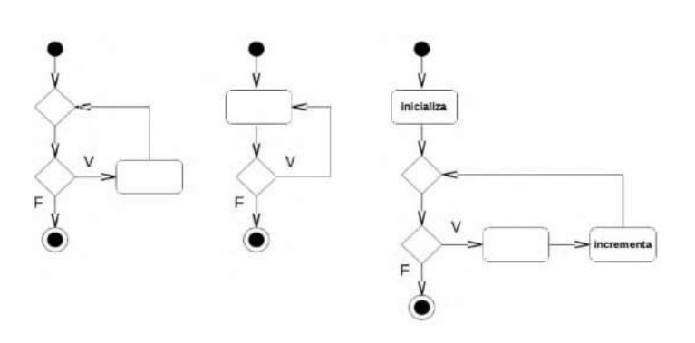
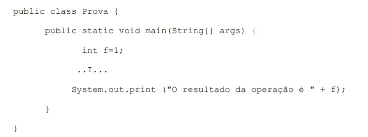

1)Ano: 2015 Banca: CS-UFG Órgão: AL-GO Prova: Analista Legislativo - Analista de Sistemas
Analise a figura a seguir, que apresenta três diagramas de atividades UML.

Os diagramas da figura ilustram as instruções de repetição suportadas pela linguagem Java, respectivamente,
2) Ano: 2015 Banca: FCC Órgão: TRE-PB Prova: Técnico Judiciário - Área Apoio Especializado - Programação de Sistemas
Considere a classe Java abaixo.

Para calcular 5! (cinco fatorial), a lacuna I deverá ser preenchida por:
3) Ano: 2012 Banca: ESAF Órgão: Receita Federal Prova: Analista Tributário da Receita Federal
Em programação Java, o comando while
4) Ano: 2015 Banca: COSEAC Órgão: UFF Prova: Técnico de Tecnologia da Informação.
Nas estruturas de controle da linguagem Java, são instruções de repetição e de seleção, respectivamente:
5) Ano: 2011 Banca: CESPE Órgão: EBC Prova: Analista
A respeito de estruturas de controle de fluxo em algoritmos, julgue os próximos itens.
A estrutura de seleção de múltipla escolha permite a execução de determinadas instruções, de acordo com a opção
escolhida. Na linsguagem Java, a palavra reservada break é utilizada para garantir que apenas a instrução selecionada
seja executada.
| LISTA ANTERIOR | PRÓXIMA LISTA |
|---|